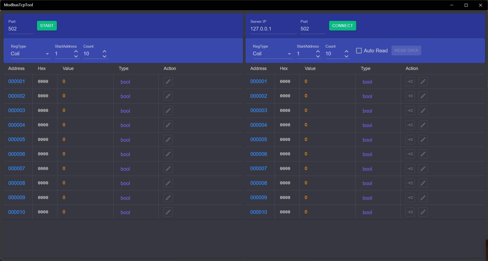

ModbusTcpTool
Introduce
Modbus TCP test tool, support server and client mode, support 4 types of registers, client support timed data reading, data support decimal, hexadecimal, binary format viewing.

On the left side is server area, and on the right is client area.
How to use
Server Usage
- Start server: Set the server port, the default is 502, and then click [Start] to start the server, and the button will change to [Stop] after started.
- Configure register: Select a register type in the RegType drop-down box, and enter the start address and quantity in the text box.
- Modify value: After the server is started, you can click the edit icon in the Action column in the table to modify the value in the address.
- The values of Coil and DiscInput are bool type, which can be modified by using the checkbox when editing, and the value is 1 when selected, otherwise it is 0
- InputReg and HoldingReg can modify the value type, and you can use the drop-down button in the Type column of the table to select the type, which can be specified as: short, int, long, float, double, and binary
- The value of the binary type is actually short, but the binary is used when displaying, and the value of each bit is modified with a set of checkboxes when editing
- The values of int and float used two addresses, and changing the value of the start address will modify two consecutive addresses at the same time
- The values of long and double used four addresses, and changing the value of the start address will modify four consecutive addresses at the same time
- The int, long, float, and double types can change byte order by the LH switch in the top toolbar
- Stop server: Click the [Stop] button on the toolbar to stop the server.
Client Usage
- Connect to server: Enter the server IP and port, then click [Connect] to Connect to server, and the button will change to [Disconnect] after connected.
- Set registers: Same as the server settings.
- Read value: There are two ways to read the value: manual reading and automatic reading
- Manual reading: You can click the [ReadData] button on the top toolbar to read the data of all addresses at once, or you can click the first icon button in the Action column of the table to get the value of the address in this row
- Auto-Read: Select the [AutoRead] checkbox in the top toolbar, and then the read interval input box will appear, you can enter the read interval (in seconds, the accuracy is 0.1, the default is 1 second, the maximum value is 60 seconds), and then click the [ReadData] button to automatically read the values of all addresses according to the specified read interval. Click [StopRead] to stop the reading.
- Modify value: If RegType is set to Input and DiscInput, the value cannot be modified. The other two types of modifications are the same as those of the server.
- Disconnect: Click the [Disconnect] button on the toolbar to disconnect.
When connecting to a third-party server or client, the start address may be 0 or 1, so it is best to do a read/write test to confirm the address correspondence after connecting.